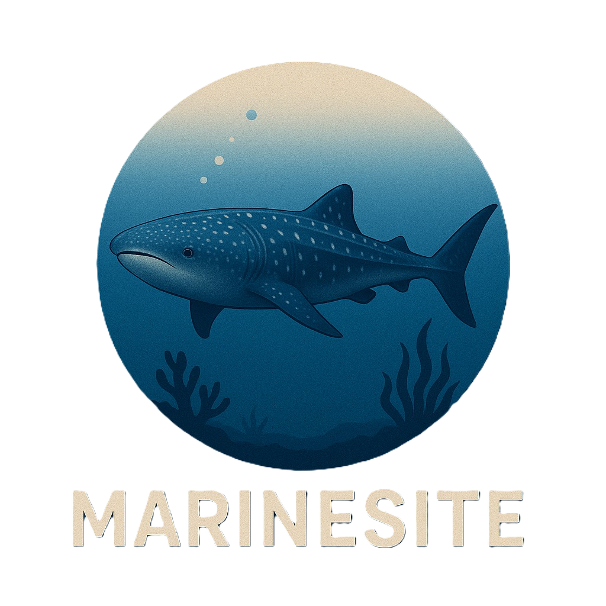

Preservare il mare significa proteggere la vita, anche quella sulla terraferma. Inizia il tuo viaggio tra le meraviglie custodite sotto la superficie!

Questa è una breve descrizione dell'area protetta che puoi personalizzare con il testo che preferisci. Parla delle caratteristiche, della biodiversità e dell'importanza della zona.
Scopri di più
Premi questo pulsante per visitare il sito ufficiale dell'area o per approfondire le informazioni.